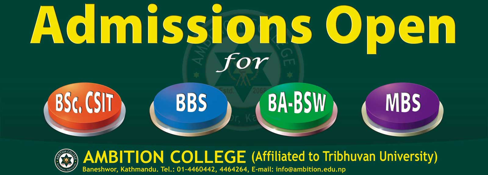

Ambition Academy Higher Secondary School was established in 2060 with a motto `Excellence with Care`. We are a dynamic and fast growing educational institution that recognizes our strategic location in Baneswor, heart of capital city. We are fully responsive to local and national needs and aware of our contribution not only to school level education but also to the social and economic development of the country. Students at Ambition Academy are afforded a high quality of school level education with small classes, state of the art resources within the school community and high quality professionals to facilitate teaching – learning activities. Ambition Academy has a well-deserved reputation for delivering high quality programs at both school and University levels across the academic departments of Management, Science & IT and Humanities. Apart from school level education Ambition Academy is running the University courses like Bachelor of Business Studies (BBS), Bachelor of Science in Computer Science and Information Technology (B.Sc.CSIT), Bachelors in Social Work (BSW) and Masters of Business Studies (MBS) on full capacity. Within a short span of time, it has come a long way with its pioneering achievements. We are achieving more than 98% result in HSEB and 100% in SLC for several years. Our HSEB board toppers of two years (2066-68 and 2068-70) within last five years have exemplified our quality in teaching- learning process.
Dear Students / Parents / Guardians, Thank you for your interest in Ambition Academy. This is a unique school with a particular and very special ethos. Put simply, it is our core aspiration that during their time with us, every individual student makes a positive difference - a difference to their own lives and difference to the lives of others. Our objective is to help our students to achieve their full potential in every area of school life. We have a long and proud Our students and our outstanding staff team are our two most precious assets. Such is the caliber of our young people from over 70 districts. We believe that there is no limit to what they can achieve. While we have high expectations and are ambitious for our students, we also know that for them to succeed, we need to provide a caring, supportive and challenging environment in which they can grow and flourish. We stress to all of our young people that what really matters is not gaining qualifications for their own sake but learning – always being open to personal growth, having a mindset that welcomes and tackles problems, being resilient when times get tough. We strive to ensure that our young people leave Ambition Academy with a set of values and perspective on life that leads them to succeed in whatever they wish to do. Ambition Academy offers an extraordinary number of opportunities, both within our taught curriculum and beyond. This is a proven school with great spirit and a sense that anything and everything is possible. We are family oriented, believing that working in partnership with families is best way to train students for mission, service and leadership. Parents provide awesome leadership and assistance in making this institution a great place for children. We hope you can discover how Ambition Academy can benefit your child. For a more complete picture of what our facility and staff can offer, consider visiting us during the school day. Please call or email us to arrange an appointment. We look forward to hearing from you. Bishnu Kumar Ghimire Principal
Dear Students / Parents / Guardians, Thank you for your interest in Ambition Academy. This is a unique school with a particular and very special ethos. Put simply, it is our core aspiration that during their time with us, every individual student makes a positive difference - a difference to their own lives and difference to the lives of others. Our objective is to help our students to achieve their full potential in every area of school life. We have a long and proud Our students and our outstanding staff team are our two most precious assets. Such is the caliber of our young people from over 70 districts. We believe that there is no limit to what they can achieve. While we have high expectations and are ambitious for our students, we also know that for them to succeed, we need to provide a caring, supportive and challenging environment in which they can grow and flourish. We stress to all of our young people that what really matters is not gaining qualifications for their own sake but learning – always being open to personal growth, having a mindset that welcomes and tackles problems, being resilient when times get tough. We strive to ensure that our young people leave Ambition Academy with a set of values and perspective on life that leads them to succeed in whatever they wish to do. Ambition Academy offers an extraordinary number of opportunities, both within our taught curriculum and beyond. This is a proven school with great spirit and a sense that anything and everything is possible. We are family oriented, believing that working in partnership with families is best way to train students for mission, service and leadership. Parents provide awesome leadership and assistance in making this institution a great place for children. We hope you can discover how Ambition Academy can benefit your child. For a more complete picture of what our facility and staff can offer, consider visiting us during the school day. Please call or email us to arrange an appointment. We look forward to hearing from you. Bishnu Kumar Ghimire Principal
Dear Students / Parents / Guardians, Thank you for your interest in Ambition Academy. This is a unique school with a particular and very special ethos. Put simply, it is our core aspiration that during their time with us, every individual student makes a positive difference - a difference to their own lives and difference to the lives of others. Our objective is to help our students to achieve their full potential in every area of school life. We have a long and proud Our students and our outstanding staff team are our two most precious assets. Such is the caliber of our young people from over 70 districts. We believe that there is no limit to what they can achieve. While we have high expectations and are ambitious for our students, we also know that for them to succeed, we need to provide a caring, supportive and challenging environment in which they can grow and flourish. We stress to all of our young people that what really matters is not gaining qualifications for their own sake but learning – always being open to personal growth, having a mindset that welcomes and tackles problems, being resilient when times get tough. We strive to ensure that our young people leave Ambition Academy with a set of values and perspective on life that leads them to succeed in whatever they wish to do. Ambition Academy offers an extraordinary number of opportunities, both within our taught curriculum and beyond. This is a proven school with great spirit and a sense that anything and everything is possible. We are family oriented, believing that working in partnership with families is best way to train students for mission, service and leadership. Parents provide awesome leadership and assistance in making this institution a great place for children. We hope you can discover how Ambition Academy can benefit your child. For a more complete picture of what our facility and staff can offer, consider visiting us during the school day. Please call or email us to arrange an appointment. We look forward to hearing from you. Bishnu Kumar Ghimire Principal
To attract the best talent of students, teachers and facilities irrespective of race, religion and/or social status. Ambition provides an environment in which every student discovers and realizes his/her potential, and commits to develop positive relationship with parents, professionals and local bodies to promote education as a partnership between home and school.To provide excellence in education with care, the principle aim of the academy is to provide a stimulating, challenging and caring environment that allows everyone develop their potential.
 Admissions Open for Science, Management, and Humanities in Grade XI. Seats are limited.... Also admissions for BSCCSIT